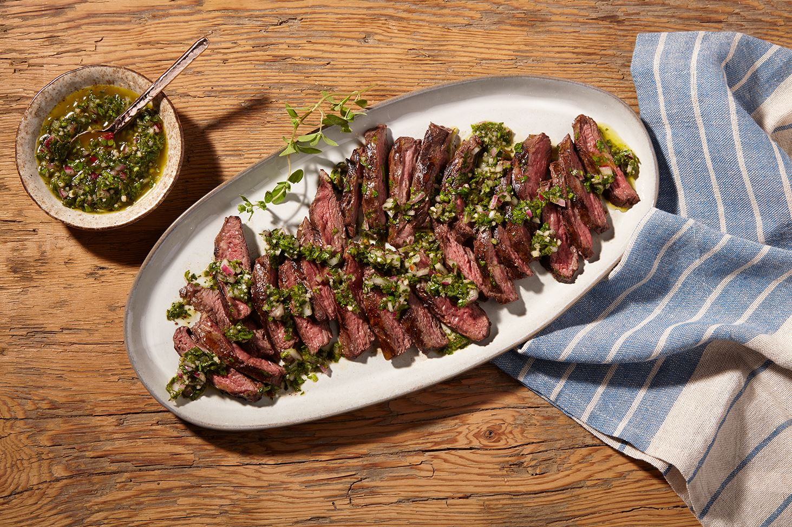
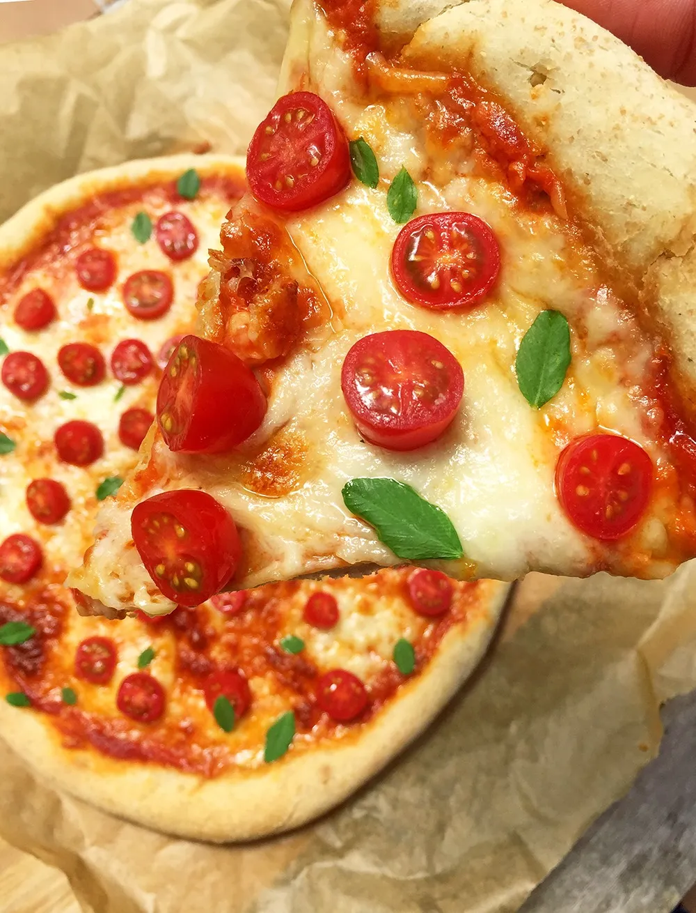
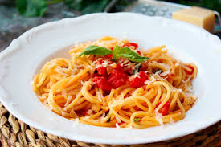
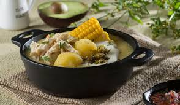
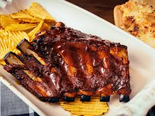

Churrasco con chimichurri
Su secreto está en la calidad y grosor de la carne y en la salsa.

Pizza
la pizza es una comida extendida por todo el mundo, se considera originaria de Italia.

Berenjenas con carne
Plato típico mediterráneo, especialmente en las Islas Baleares, Italia y Grecia.

Pasta napolitana
La pasta es siempre una opción de calidad para nuestros platos.

Ajiaco
En Bogotá el Ajiaco es un plato muy popular.

Costillas BBQ
Las costillas de cerdo son un excelente plato para aquellas personas que desean preparar una comida rápida y deliciosa.